Layout Estimation Results
Refered methods: W. Zhang, W. Zhang and J. Gu, "Edge-Semantic Learning Strategy for Layout Estimation in Indoor Environment," in IEEE Transactions on Cybernetics. 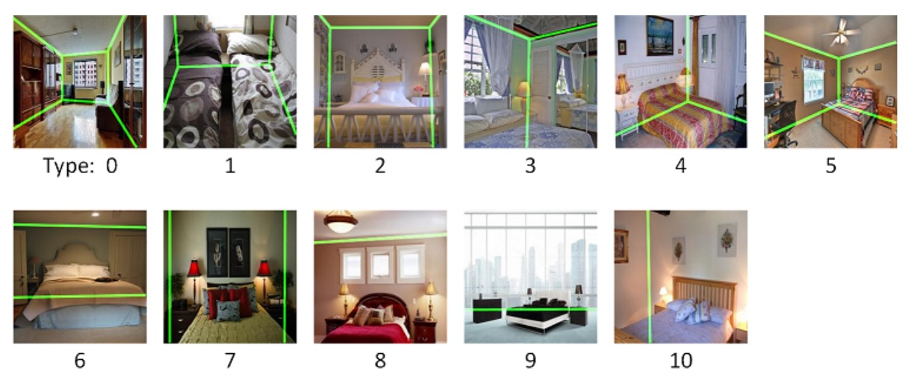 |
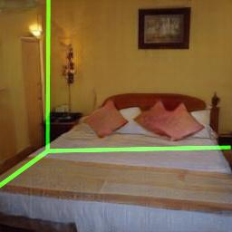 | 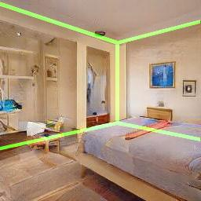 | 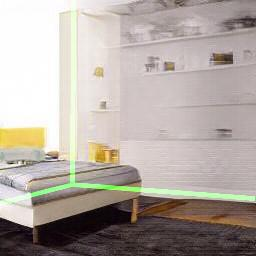 | 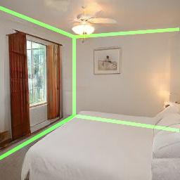 |
| 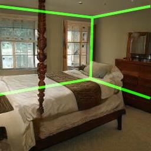 | 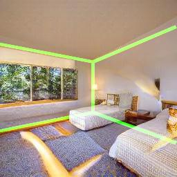 | 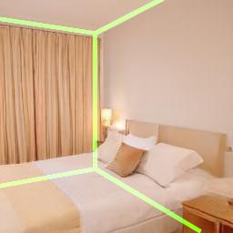 | 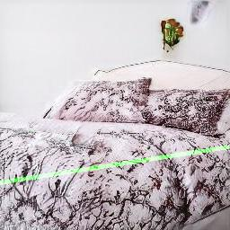 | 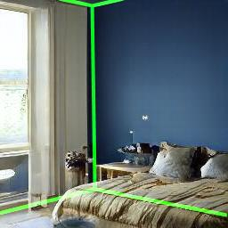 |
| 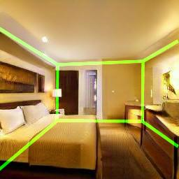 | 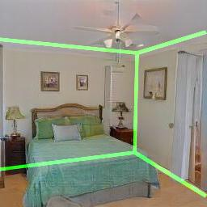 | 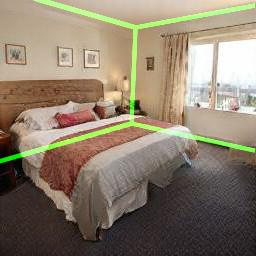 | 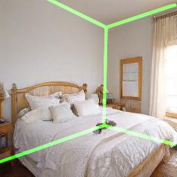 | 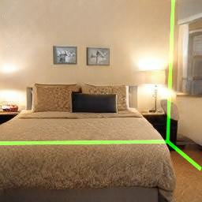 |
|